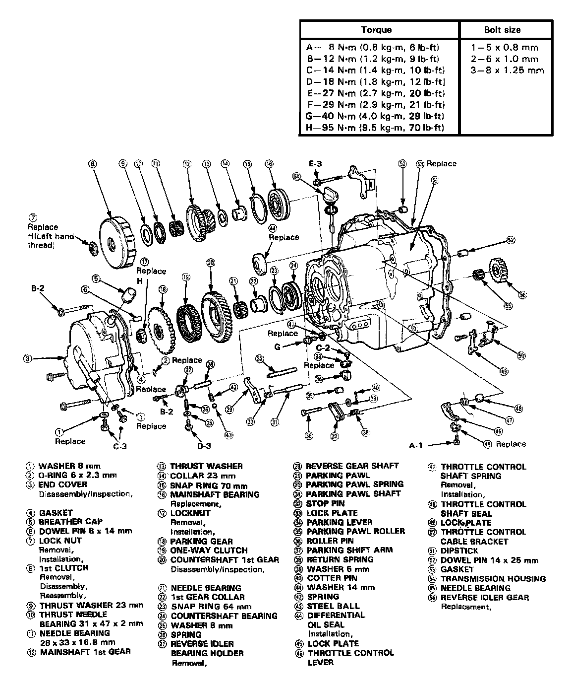
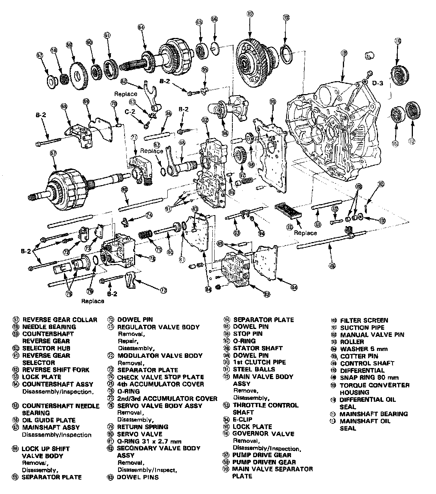

Operation CHARM
: Car repair manuals for everyone.
Home
>>
Acura
>>
1989
>>
Integra L4-1590cc 1.6L DOHC FI
>>
Repair and Diagnosis
>>
Transmission and Drivetrain
>>
Automatic Transmission/Transaxle
>>
Specifications
>>
Mechanical Specifications
>>
A/T Torque Data
>>
CA 4-SPD A/T
CA 4-SPD A/T
CA 4-spd A/T, Assembly Torque 1 Of 2:

CA 4-spd A/T, Assembly Torque 2 Of 2:
